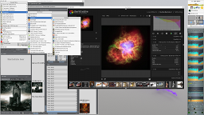
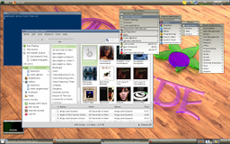
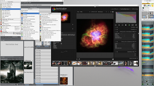
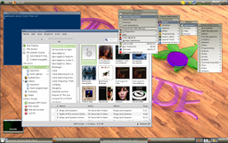

Willkommen bei Fvwm-Nightshade! Dieses Projekt ist darauf ausgelegt eine resourcenschonende, funktionsreiche und ansprechende Konfiguration für Fvwm zu sein. Es beinhaltet viele nützliche Utensilien um das Arbeiten und das Leben leichter zu gestalten, gepaart mit den Vorzügen eines modernen Desktopsystems. Selbstverständlich kann es durch Sie als Anwender auf ihre persönlichen Bedürfnisse angepasst werden. Es ist ausführlich dokumentiert und zeigt Ihnen was mit diesem leistungsfähigen Windowmanager möglich ist.
 



Features von Fvwm-Nightshade:
- Eigenes User-Konfigurationsverzeichnis ~/.fvwm-nightshade. Somit parallel verwendbar zu einer existierenden Fvwm-Konfiguration
- Eigenen Eintrag in graphischen Loginmanagern
- Konfigurationwerkzeug für die Grundeinstellungen (Schrift, Layouts, usw)
- 4 virtuelle Arbeitsflächen
- Taskbar für die aktuelle Arbeitsfläche
- Drei unterschiedliche Layouts: Horizontal, Vertical and G2like
- Horizontal (oben):
- Vertical (rechts oben):
Die Bedienflächen beinhalten jeweils:
- Hauptmenü
- Infobereich (stalonetray)
- Cpu-Last (conky)
- Datum und Zeit (conky)
- G2like (oben & unten)
Die Bedienfläche oben beinhaltet (von links nach rechts):- Hauptmenü
- Persönliches Menü (Favoriten)
- Infobereich (stalonetray)
- Datum und Zeit (conky)
- Beenden Menü
- Arbeitsfläche anzeigen
- Taskbar
- Arbeitsflächenauswahl
- Bildschirm sperren & Bildschirmschoner (xscreensaver)
- Persönliches Menü generierbar via FvwmScript-PersonalMenu
- Bildschirmhintergrund via Miniaturvorschau auswählbar (imagemagick and eterm)
- Animationseinstellungen für Fenster
- Einfaches Befehl/Programm "ausführen" via FvwmForm
- Mehrere Themen und Fensterdekorationen (Air, Ambience, Clean, CrystalBall, FlatTab, and Tribal).
diese können ohne Neustart gewählt werden. - Eigene Themen und Layouts können mit Hilfe von Vorlagen erstellt werden
(derzeit sind nur Vorlagen für Themen verfügbar) - Autostart Möglichkeit (automatisiertes starten von Anwendungen nach dem anmelden)
- Ein hilfreicher Satz an grafischen Werkzeugen zur Systemkonfiguration
(Gtk+, Qt, Maus, Tastatur, usw) - Hilfemitteilungen für die Mausaktionen in der Titelleiste, Fenster, Ecken, Seiten
und Schaltflächen
Shift-Alt-Ctrl + click - Hilfemitteilungen für die Tastatureingaben mit Shift-Alt-Ctrl + Taste
- Eine allgemeine Hilfemitteilung erreichn Sie über Shift-Alt-Ctrl + H
- Dynamische Menüs
- Wechseln des Eingabefokus zwischen den Fenstern mit Alt-Tab
- Begrüßungsbildschirm
- Nachrichtenausgabe für benötigte Anwendungen, für Konfigurationszwecke, in .xsession-errors
- Governor-Tool FvwmScript-CPU-Performance, für die Einstellung der Cpu-Parameter (cpufreq)
- Anzeige von Miniaturansichten minimierter Anwendungen und deren Name, anstelle einfacher Symbole
- Build support für deb, rpm and Arch Pakete
Voraussetzungen:
Benötigt: Fvwm >= 2.6.6 (mit allen Funktionen kompiliert), python-2, python-xdg, xterm, conky, xscreensaver, eterm, imagemagick, librsvg2-bin, xwd, stalonetray, wm-icons, cpufrequtils
Empfohlen: gnomes network manager, Volume Icon
Nützlich: fdpowermon, bluetooth-applet, pm-utils, LxApearance, qtconfig for qt3, qtconfig for qt4, xneurs
Fehler und Feature Anfragen
Fvwm-Nightshade ist ein junges Projekt. Fehler sind möglich, wir sind bestrebt
diese schnell zu beheben aber niemand is perfekt ... Sollten sie Fehler finden oder haben Sie Ideen und
Anregungen, so helfen Sie uns bei unserer Arbeit und reichen Sie diese ein, unter:
https://github.com/Fvwm-Nightshade/Fvwm-Nightshade/issues
Mailingliste
Es gibt zwei Mailinglisten, diese erreichen Sie unter:
Generelles:
https://groups.google.com/forum/?hl=en#!forum/fvwmnightshade
Entwicklung:
https://groups.google.com/forum/?hl=en#!forum/fvwmnightshade-workers
Um zu diesen Mailinglisten Zugang zu bekommen, gehen sie bitte wie folgt vor:
- Registrieren Sie ihre Email bei Google durch betätigen der "Sign in" Schaltfläche (oben rechts).
- Nach erfolgreicher Emailüberprüfung, können sie sich in ihrem neuen Zugang anmelden.
- Gehen sie auf
https://groups.google.com/forum/?hl=en#!forum/fvwmnightshade
und treten sie der Gruppe bei durch klicken auf "Apply to join group". - Füllen Sie das Beitrittsformular aus und klicken sie auf die Schaltfläche "Apply to this group".
- Nachdem Ihre Anfrage angenommen wurde erhalten Sie eine Email von uns.
- Jetzt können sie Emails an fvwmnightshade@googlegroups.com senden um an die Mailingliste Beiträge zu Posten.
Um sich von der Mailingliste abzumelden senden Sie eine Email an: fvwmnightshade+unsubscribe@googlegroups.com or fvwmnightshade-workers+unsubscribe@googlegroups.com
Genießen sie unsere Arbeit und hoffentlich gefällt ihnen Fvwm-Nightshade genau so gut wie uns :-)
Team
Thomas Funk
Bernhard Popp
Email: fvwmnightshade@gmail.com